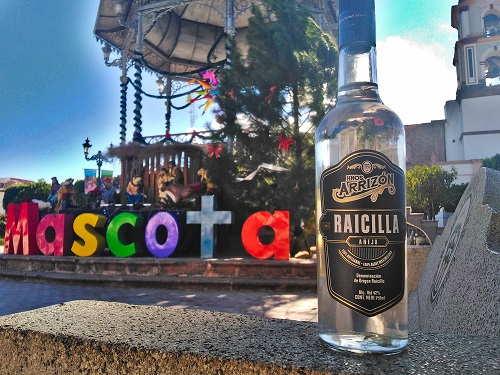

1932
1932
Origen · El sueño de Cananea
Blas Arrizón aprende la destilación del agave en las minas de Cananea, Sonora, y al volver a Jalisco la aplica al agave maximiliana: nace la raicilla Arrizón.
Para disfrutar de nuestra raicilla necesitas ser mayor de 18 años. Este sitio contiene información sobre bebidas alcohólicas y está dirigido a un público adulto.
Bebe con responsabilidad. El consumo excesivo de alcohol es dañino para la salud.
Destilando tradición…
Un destilado de agave maximiliana que cruza generaciones desde 1932, hecho a mano en la sierra de La Vieja.
Raicilla Hnos. Arrizón es un destilado de agave maximiliana que ha trascendido de generación en generación desde 1932, gracias al señor Blas Arrizón. Todo comenzó en las minas de Cananea, Sonora, cuando un miembro de la familia aprendió el arte de destilar agave y lo trajo de vuelta a Jalisco para crear lo que hoy se conoce como el primer registro de marca de raicilla de la zona de Mascota.
En cada momento del proceso se brinda la dedicación, el esfuerzo y la tradición de una familia entera. Probar nuestra raicilla te hará remontarte a esa pequeña parte de tu interior que añora lo artesanal… y te generará el deseo de seguir bebiéndola.

La marca Hnos. Arrizón es el primer registro que se tiene de la raicilla en la zona de Mascota.
Sandra Arrizón fue nombrada Embajadora de la Raicilla en el XII Festival de la Raicilla.

La raicilla obtiene su Denominación de Origen en 2019, protegiendo a los 16 municipios raicilleros de Jalisco.

IX Expo Tequila Tlaquepaque y XII Festival de la Raicilla, llevando sabor de la sierra a todo México.
Más de 90 años de una tradición que se transmite de generación en generación, de padre a hijo, en el corazón de la Sierra Occidental de Jalisco.
1932
Blas Arrizón aprende la destilación del agave en las minas de Cananea, Sonora, y al volver a Jalisco la aplica al agave maximiliana: nace la raicilla Arrizón.
Familia
Durante décadas la raicilla se destila en secreto, para la familia y el pueblo. El saber se guarda como un tesoro.
 La Vieja
La Vieja
En el rancho de La Vieja, en la sierra de Mascota, se levanta la Taberna La Vieja, donde el agave se convierte en destilado.
 3ª Gen
3ª Gen
Gilberto y Antonio Arrizón Delgadillo recogen el saber familiar y se convierten en los maestros raicilleros de hoy.
2019
La raicilla obtiene su Denominación de Origen en junio de 2019 y la familia se formaliza como marca reconocida.
La marca se consolida como el primer registro de la raicilla en Mascota, con botellas que cruzan fronteras.
Navidad
En el XII Festival de la Raicilla, Sandra Arrizón es coronada Embajadora de la Raicilla.
 Hoy
Hoy
Festivales, ferias, coctelería y exportación: posicionados desde la sierra de La Vieja hasta la actualidad, sin perder el origen.
 Clásica
Clásica
Nuestra raicilla insignia. 100% agave maximiliana de la sierra, destilada a mano en la Taberna La Vieja.
Edición especial
Reposa en vidrio durante al menos 6 meses, un sello de nuestra casa: la maduración sin roble suaviza y redondea el destilado.

DegustaciónEl mismo carácter de la sierra en formato viaje y degustación. Ideal para regalar, probar o llevar contigo.
Macerados con frutas de la región. Toca la foto para pedir el tuyo por WhatsApp.
Maestros raicilleros · Herederos de Blas Arrizón
Custodian el proceso completo, del campo a la botella, tal y como lo hicieron sus abuelos.
Embajadora de la Raicilla 2019 · Ventas
Representante de la marca y voz de la familia en festivales, ferias y catas en todo México.Más de 90 años de saber heredado de padre a hijo, sin atajos.
Todo el proceso a mano en la Taberna La Vieja, del campo a la botella.
Respetamos los tiempos de la naturaleza: 8 años no se negocian.
Semilla propia, vivero, aprovechamiento integral del agave y residuos que regresan a la tierra.
El sabor pertenece a la sierra. Trabajamos con y para nuestra gente.
De La Vieja, Jalisco, al mundo. Una sola receta, la de siempre.
Ocho etapas, cero prisa. Cada etapa se realiza con paciencia, respetando los tiempos que la naturaleza dicta.
Recolectamos semilla de agave maximiliana silvestre y la seleccionamos una a una, cuidando la genética de la sierra.
Las semillas germinan en nuestro vivero, donde cada plántula se cuida hasta ser fuerte para la tierra.
Las plantas jóvenes llegan al campo y crecen libres en la sierra, sin agroquímicos, con el ciclo natural del agua y el sol.
Tras 8 o más años, cuando el agave madura y brota su quiote, se corta con la coa para obtener la piña o cabeza.
Las piñas se cocinan en un horno de mampostería precalentado a 600 °C durante unas 48 horas, con leña de la región, dando ese ahumado sutil.
Las piñas cocidas se machacan a mano para extraer los jugos dulces que alimentarán la fermentación.
Los mostos fermentan de forma natural en tinas de madera, con microorganismos nativos. Aproximadamente 5 días de burbujeo pausado.
Doble destilación: primero en alambique arábigo con serpentín de cobre y luego en alambique de cobre, para lograr pureza y carácter.
Los bagazos y residuos del agave se reincorporan como abono a nuestros campos. La vinaza se trata y reutiliza. Las semillas se siembran de nuevo. Así, el agave que hoy destilamos es el mismo que siembra el futuro.
La raicilla es un destilado artesanal de agave con Denominación de Origen de Jalisco, producido en la Sierra Madre Occidental desde hace siglos. En Hnos. Arrizón la elaboramos 100% con agave maximiliana.
Del agave maximiliana, también llamado lechuguilla, una especie endémica de la sierra de Jalisco que tarda más de 8 años en madurar.
Idealmente derecha, a temperatura ambiente, para apreciar sus aromas; también es excelente en coctelería. Se le conoce como "la reina del maridaje".
Escríbenos por WhatsApp al +52 388 105 8508 o por correo. Coordinamos envíos y entregas en todo México.
Sí. Ofrecemos visitas guiadas y tours por el rancho de La Vieja en Mascota, Jalisco, con recorrido por el campo de agave y cata de nuestros destilados. Reserva desde la sección Visita.
Te invitamos a reservar una visita y tour por nuestra taberna en el rancho de La Vieja, en la sierra de Mascota. Recorre el agave en campo, conoce cada etapa del proceso, y culmina con una cata de nuestros destilados y ponches.
¿Quieres pedir raicilla, proponer una colaboración o agendar una visita? Escríbenos, nos encanta conversar sobre nuestro destilado.
Rancho La Vieja S/N, Mascota, Jalisco, México · Taberna La Vieja